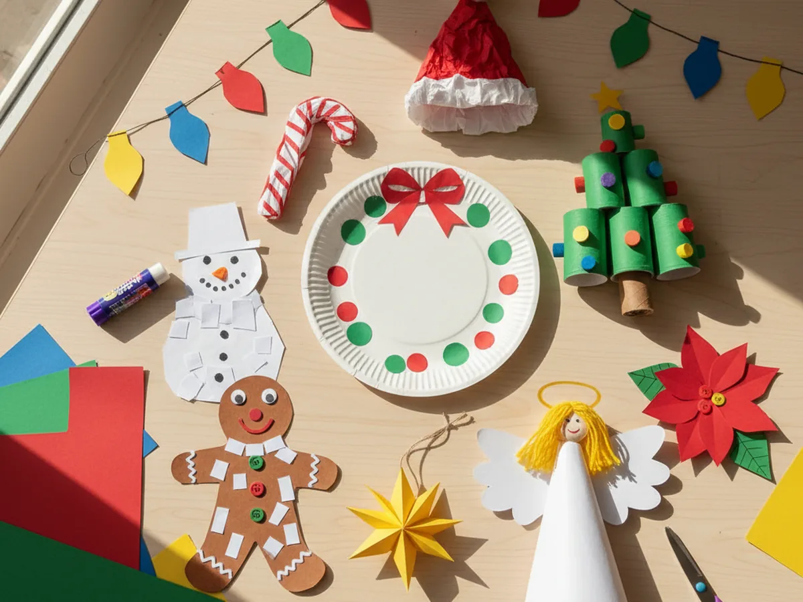
The holidays are so much sweeter when little hands are busy creating. These paper Christmas crafts for kids use simple supplies, take under 30 minutes each, and result in decorations your family will actually want to display. Whether you try one idea or work through the whole list, this December is about to get extra cozy. 🎄
What You'll Need
Most of these Christmas paper crafts share the same handful of basic supplies, so you can grab everything at once and jump from one idea to the next.
- Construction paper assorted color pack (red, green, white, and yellow are the most useful)
- Fiskars child-safe scissors (rounded tips are perfect for ages 3 and up)
- Elmer's washable glue sticks (easier and less messy than liquid glue for small hands)
- Crayola washable markers (for adding details and personalizing each craft)
- Clear tape (handy for assembling 3D pieces without waiting for glue to dry)
- Paper plates (needed for ideas 1 and 7, plain white uncoated work best)
10 Paper Christmas Crafts to Make Together
1. Paper Plate Wreath
Cut the center out of a paper plate to make a ring shape, then let your child glue strips and teardrops of green construction paper all around it like leaves. Add small red paper circles for holly berries and a big red bow at the bottom made from a folded strip. It is one of the most satisfying paper Christmas crafts for kids because the result looks genuinely beautiful hung on a door or window. Even two-year-olds can help tear and glue the leaf pieces.
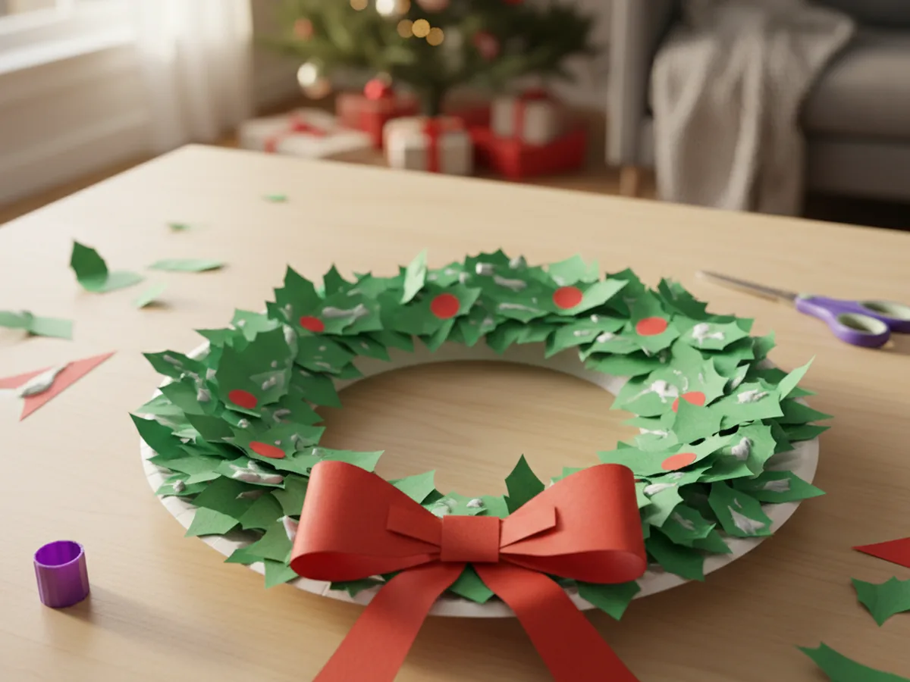
2. Paper Roll Christmas Tree
Stand an empty toilet paper roll upright and wrap it in green construction paper, then cut out small triangles of different sizes to glue around it as branches. Add tiny dots of color for ornaments drawn on with markers, and a yellow paper star on top. This little 3D tree looks adorable on a shelf or windowsill and kids love how it stands up on its own. Make a whole forest of them in different heights for a really sweet display.
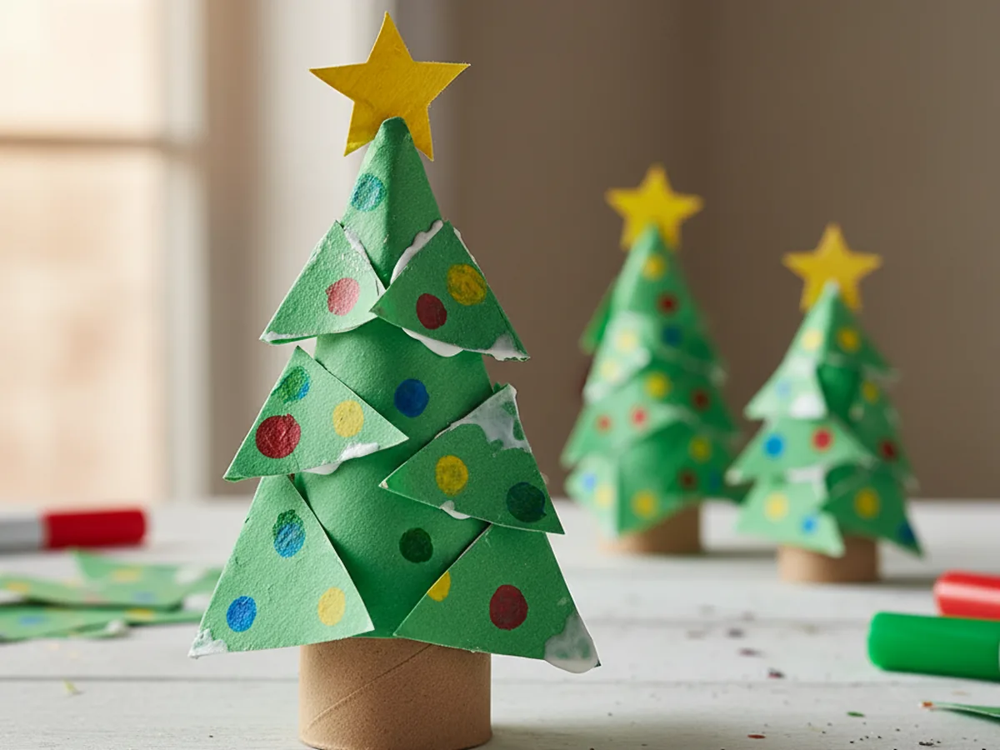
3. Wearable Paper Santa Hat
Roll a large sheet of red construction paper into a cone that fits your child's head, then tape a wide strip of white paper around the base as the trim and add a small white paper pom-pom at the tip. This holiday paper craft doubles as a costume piece, which means the fun does not stop when the gluing is done. Kids love wearing their hats for the rest of the afternoon, making it one of those crafts that truly keeps on giving. 🎅
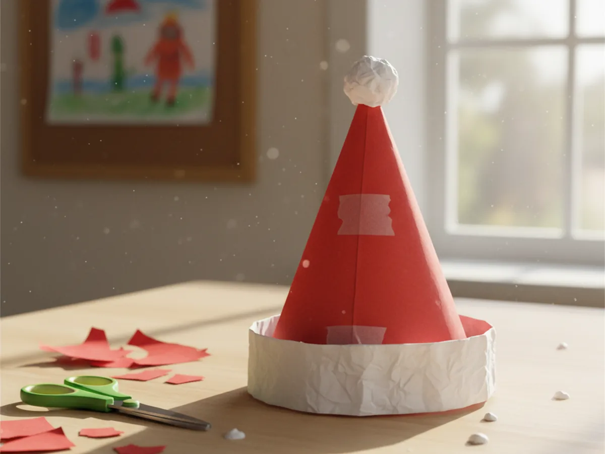
4. Tissue Paper Candy Cane
Cut a thick candy cane outline from white cardstock, then have your child tear small squares of red and white tissue paper and glue them on in alternating stripes to fill the shape. The tearing and scrunching is wonderful for little fingers, and the finished candy cane looks bright and three-dimensional thanks to the texture. This is genuinely one of the easiest paper Christmas crafts for toddlers since there are no scissors involved at all. Hang it on the tree or frame it as a keepsake.
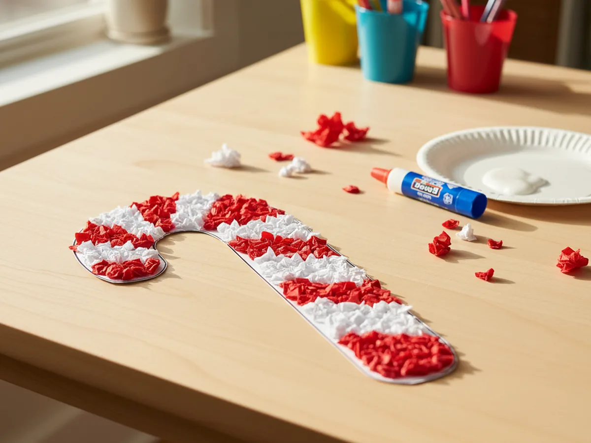
5. Paper Snowman Collage
Cut three white circles in graduating sizes and glue them onto dark blue or black paper to form a snowman, then add a construction paper scarf, hat, and buttons. Give him a carrot nose from orange paper and a big smile drawn with marker. This Christmas paper craft for kids is wonderfully open-ended since every snowman ends up looking completely different and full of personality. It is a great one to photograph and send to grandparents as a holiday card insert. ❄️
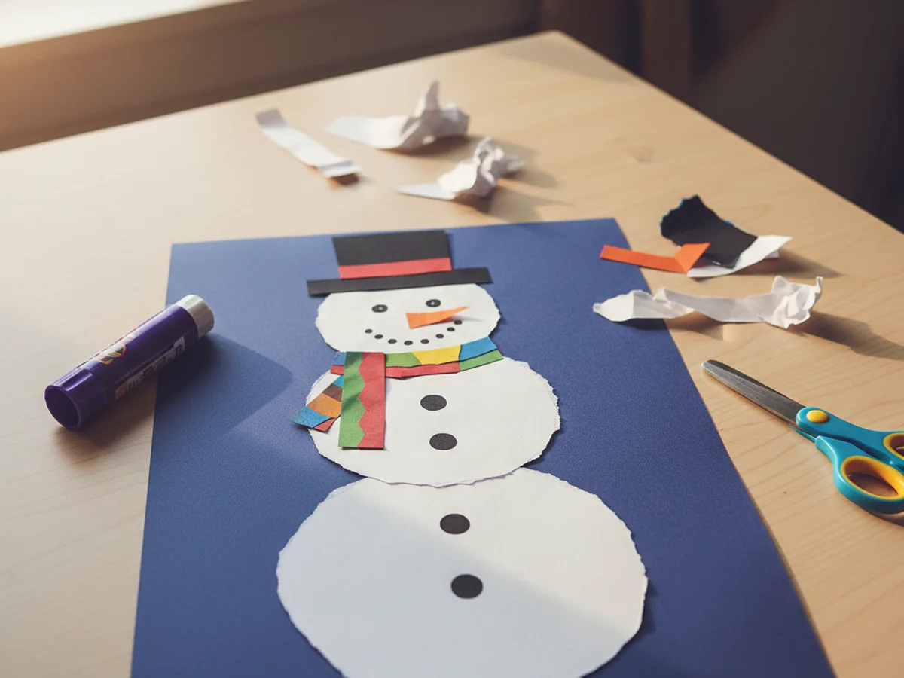
6. Folded Paper Star Ornament
Cut five identical diamond shapes from yellow or gold paper, fold each one in half lengthwise, and glue them together at their bases in a star shape. Let the finished star dry flat, then punch a small hole at the top and thread a piece of string through for hanging. The geometric result looks surprisingly professional for something made entirely from folded paper, and older kids can make these almost independently. A tree full of handmade paper stars is one of the sweetest holiday sights imaginable.
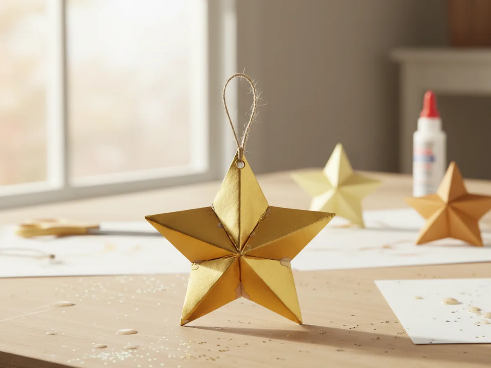
7. Paper Plate Gingerbread Man
Paint or color a whole paper plate brown, cut out arms and legs from brown construction paper, and attach them to the back of the plate. Use white paint or a thick white marker to draw on icing details, buttons, and a cheerful face. This is one of those festive paper crafts that looks adorable displayed on a fireplace mantel or a holiday card, and the round paper plate body makes the gingerbread man look cute and cartoonish in the best possible way. Little ones love adding their own creative icing details.
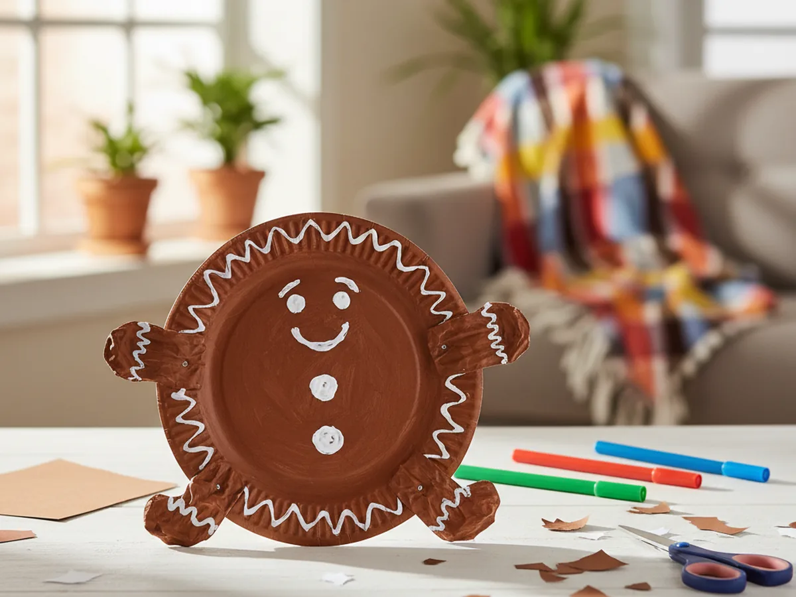
8. Paper Christmas Lights Garland
Cut colorful teardrop or bulb shapes from bright construction paper and glue them along a long strip of black paper as if it were a wire. You can drape the finished garland across a mantel or tape it above a doorway for an instant festive decoration. This is a wonderful paper Christmas craft for practicing cutting skills since kids can cut all the bulb shapes themselves and choose any colors they like. Making it longer becomes a real group project when siblings join in.
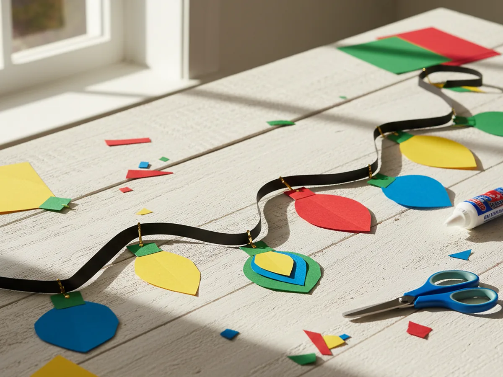
9. Paper Cone Angel
Roll a semicircle of white paper into a cone for the angel's body, add a small yellow circle head on top, and glue two white teardrop wings to the back. A small halo made from a thin strip of gold paper tucked behind the head finishes the look beautifully. These little angels look gorgeous in a row on a windowsill or as a table centerpiece, and kids feel immense pride in making something so graceful from simple paper. This is one of those Christmas paper crafts for kids that grandparents always ask to keep.
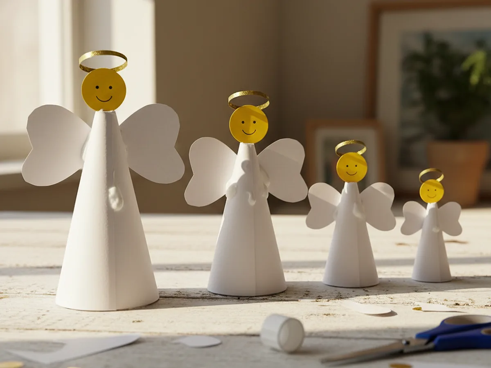
10. Paper Poinsettia
Cut out six to eight large red teardrop petal shapes and arrange them in a circle, layering them slightly to form the flower. Add a cluster of small yellow circles in the center as the stamens. The poinsettia is the classic holiday flower, and making a paper version is a lovely way to bring that festive color into your home without any real plant care involved. Kids can make several to create a whole bouquet, and the bright red against a green background is genuinely stunning.
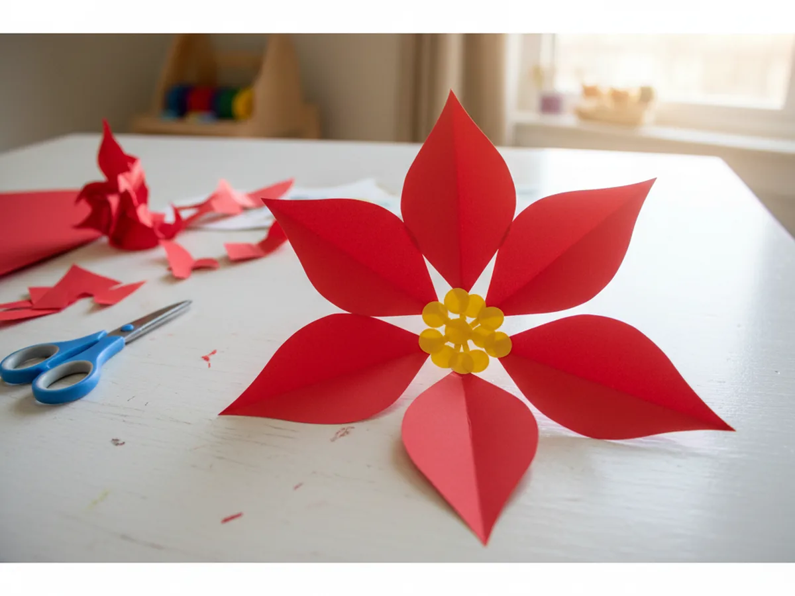
Final Thoughts
These 10 paper Christmas crafts prove that the best holiday decorations do not come from a store. A stack of construction paper, a pair of scissors, and one happy afternoon with your child can fill your home with handmade magic that feels so much more meaningful than anything you could buy. Every wreath, every angel, and every snowman is a little piece of this December that you will look back on and smile. 🎁
More Crafts You'll Love
If you are in full holiday crafting mode, these two articles are perfect for your next cozy afternoon.
- 25 Adorable Christmas Paper Crafts Kids Will Beg to Make Every Year
- 20 Adorable Simple Paper Craft Ideas Kids Will Beg to Make Again and Again
Pick one idea tonight, or work your way through the whole list together this December. Happy crafting! ✂️